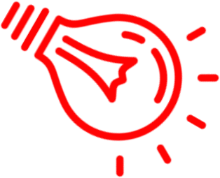
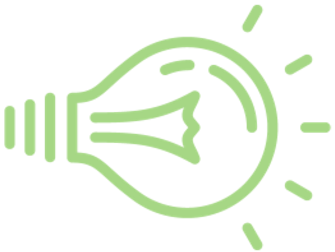
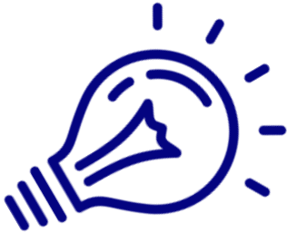

Assessing color mixing of droplets with stroboscopy



Stroboscopy is a method of examining a vibrating or fast moving object. In this project, we flash red, green, and blue lights at a piddler, an oscillating pump. The pump produces a small pulse of liquid at a rate of 60 pulses per second. The rates of the lights affect the motion of the droplets. For any color,
- slower than piddler → droplet moving down
- faster than piddler → droplet moving up
- same as piddler → droplet stays still
Additive color mixing with water droplets

Image: Wikimedia Commons
Subtractive color mixing with shadows

Image: Wikimedia Commons